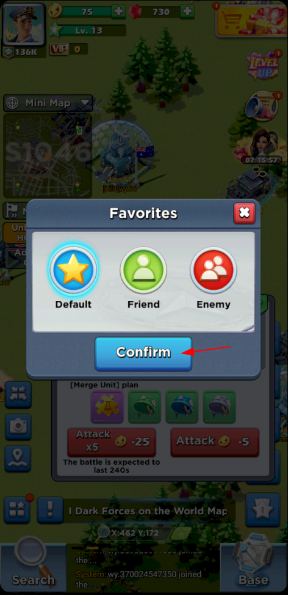

Like most incremental games Top War comes with a gift code system where you can enter a gift code such as 2021NYGIFTS and it will give you instant free rewards. Some codes do have an expiry date, so you may run across some codes that are no longer valid.
We recommend using them only when you really need them, like for a specific event or if you get stuck. Because you only get to use them once. Then you have to wait for new codes to appear, which you can usually find by googling "Top War Gift codes".
List of codes: 2021NYGIFTS, en0yxma5, thanksgiving, G123_vividarmy, EternalLand, wissenswert, vividarmy621, topwar888, TopWar2020
To enter a code follow the steps
All of them can be found in your inventory - decoration index, with a description of what they do. This is useful when an event offers a decoration as a reward but dont specify what it does. You can look it up, even if you dont own them.
You will notice that all decoration have a Max Efficiency. That means that after the max is reached, you will not get anymore benefit from placing more of that specific decoration within your base. You will also notice the decorations have a LVL. Each LVL increases the % benefit you receive from them.
Thus it is possible to gain more benefits from decoration once you have reached the max amount of them, by merging the decoration together to get a higher level.
You might notice a benefit increase after adding one more above the max. But that is an illusion. The system will always take the highest LVLs decorations first and count them in the max. So if you have a max efficiency of 10 and you already have 10 LVL 1 deco and you add another one LVL 2, your percentage will increase. But only because the system takes the first 10 highest LVLs. If you then remove a LVL 1 you will notice that you are not losing any benefits.
On the world map you can bookmark almost any building & enemy, so you can access them later. It is to be noted that if you bookmark a player's base it will not stick to that player. Meaning it only bookmarks the current location of the player's base, if the player move his base your bookmark will not update its location. It will still be pointing to the original location when you saved the bookmark.
To bookmark a location see screenshots below:
To access a saved bookmark see screenshots below: